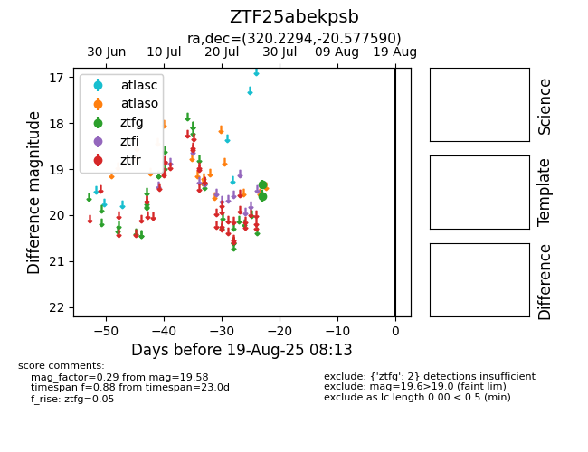

Target ZTF25abekpsb at 2025-08-19 09:59, see:
FINK: fink-portal.org/ZTF25abekpsb
Lasair: lasair-ztf.lsst.ac.uk/objects/ZTF25abekpsb
ALeRCE: alerce.online/object/ZTF25abekpsb
alt names
ZTF25abekpsb (ztf,fink)
coordinates:
equatorial (ra, dec) = (320.2294,-20.57759)
galactic (l, b) = (28.8035,-41.75817)
photometry
last ztfg=19.58
2 ztfg detections
